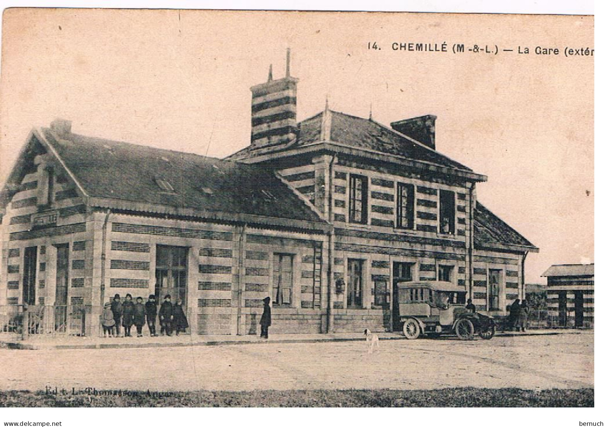

Je ne suis ni une classe, ni un arrêt de car,
Mais ici, les départs marquent parfois un tournant.
Depuis des décennies, je vois passer des visages,
Certains partent le cœur léger, d’autres à contrecœur.
Je ne retiens personne, mais je m’en souviens longtemps.
Mes lignes ne s’écrivent pas sur du papier,
Elles vibrent, elles grincent, elles filent droit devant.
Et quand je siffle, il est trop tard pour reculer.
Quel est ce lieu où l’on attend… pour mieux partir ?

Code incorrect. Essayez encore.
💡 Indice 1 : Certains me cherchent pour aller à Angers ou Cholet.
Place de la Gare, 49120 Chemillé-en-Anjou
💡 Indice 2 : Je suis la gare SNCF de Chemillé, place de la Gare.
Question 1 :
Combien y a-t-il d'arrêts de train en gare de Chemillé chaque jour ?
Quelle est l’amplitude horaire ?
Prenez une photo de l’affichage des horaires.
Notez les réponses sur votre feuille.
Une fois que vous avez trouvé la réponse, trouvez ensuite le code collé sur un support métallique non loin de l’endroit où vous avez trouvé la réponse.